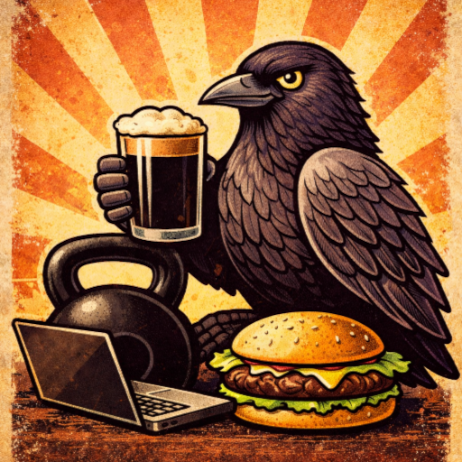
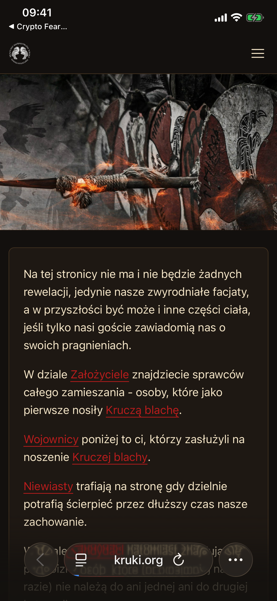
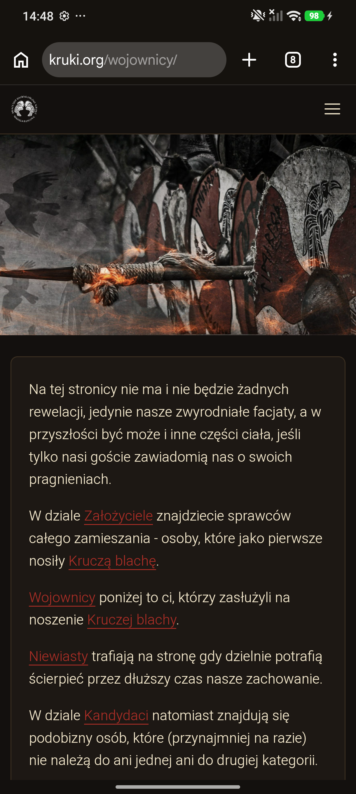
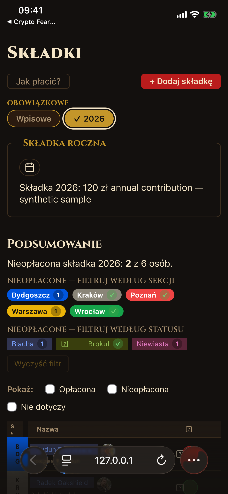
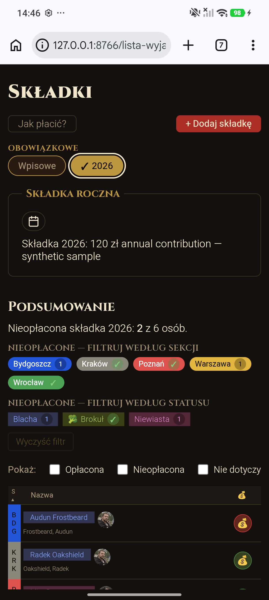

Facebook feed
Automatic post gathering keeps public updates together on the homepage.

Cardio Can Wait Selected work ← All projectsKRUCZE GALERII · CUSTOM PLATFORM · MOBILE FIRST
A tailor-made public website and members’ space, built around the group’s established tools and the way its members coordinate events, people, and shared resources.
THE CHALLENGE
The project brought a public presence together with a private space for members, while keeping the community’s existing Google Drive archive at the centre of its photo and file workflows.
That meant building around real requirements instead of asking the group to move its materials and routines into a generic service.
EXISTING INFRASTRUCTURE
Google Drive remains the shared source for event photos and materials. The custom site links that existing archive into public galleries and member workflows.
THE PUBLIC EXPERIENCE
Captured from the live public application on iPhone and Android. The content shown here is already public on the group’s website.


THE MEMBERS’ SPACE
The private application brings member coordination into one place, with views designed for everyday use on a phone.

Synthetic names, contribution statuses, dates, and portrait photos.
Synthetic names, contribution statuses, dates, and portrait photos.Coordinate gatherings, schedules, and participation.
See shared contribution information and each member’s status.
Keep profiles and membership administration connected.
Connect the existing photo archive with the community website.
MADE TO FIT THE COMMUNITY
A public website, social updates, shared media, and a members-only workspace shaped around one community’s needs.